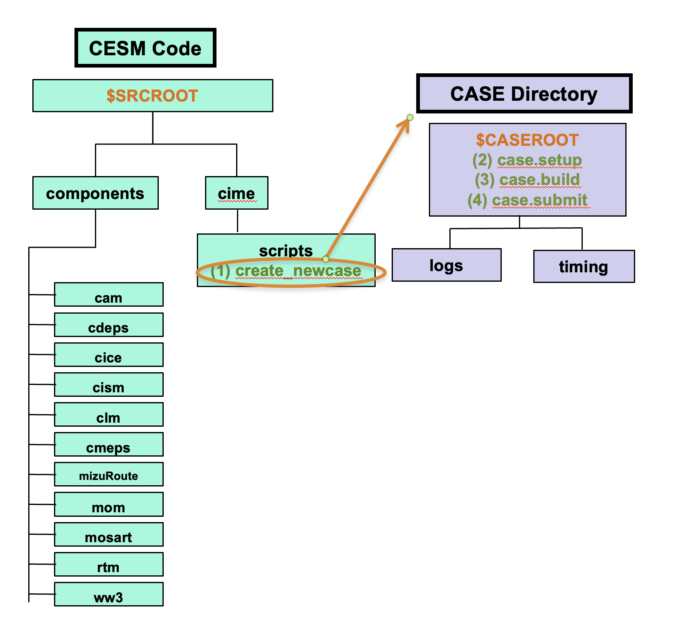
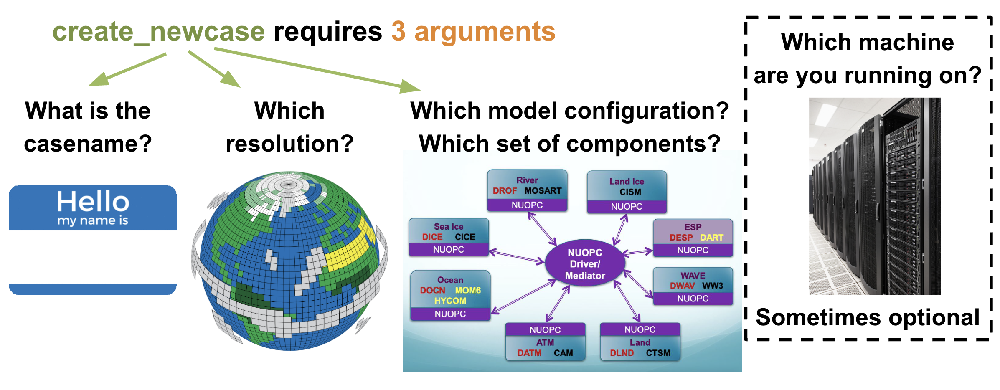
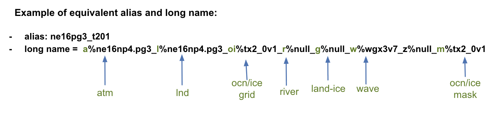
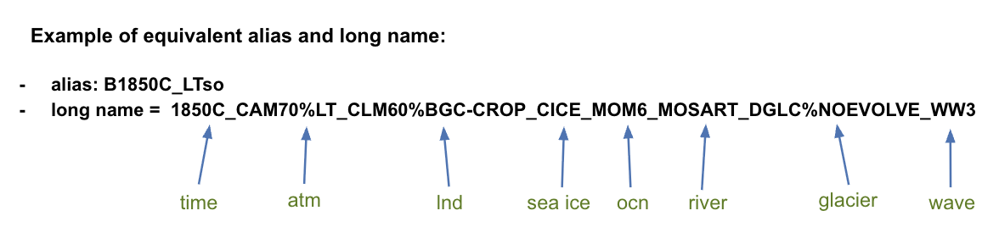

Create New Case#
The tool that generates a new case is create_newcase. This tool is located in the $SRCROOT directory under the cime/scripts directory.
After running create_newcase, a $CASEROOT directory is created. The directory $CASEROOT contains the scripts needed for the following steps (case.setup, case.build and case.submit)

Figure: Detailed view of the location of create_newcase
For the current tutorial on Derecho, the paths are:
$SRCROOT=/glade/u/home/$USER/code/my_clm_code$CASEROOT=/glade/u/home/$USER/cases/$CASE
Command Syntax#
Go to the cime/scripts directory in the CLM code
cd /glade/u/home/$USER/code/my_clm_code/cime/scripts/
Example of basic ./create_newcase syntax:
./create_newcase --case /glade/u/home/$USER/cases/CASE --res RES --compset COMPSET
NOTE: Do not enter the example above at the command line. You will create your first case in the Exercise at the end of this section.
Click here for example output
Compset longname is 1850_DATM%CRUJRA2024b_CLM60%BGC-CROP_SICE_SOCN_MOSART_DGLC%NOEVOLVE_SWAV
Compset specification file is /glade/u/home/$USER/code/my_clm_code/cime_config/config_compsets.xml
Automatically adding SESP to compset
Compset forcing is 1850
ATM component is Data driven ATM CRUJRA 2024b data set: fills the Greenland snow hole per https://github.com/ESCOMP/CDEPS/issues/382; the previous 2024 version already filled Antarctica
LND component is clm6.0:BGC (vert. resol. CN and methane) with prognostic crop:
ICE component is Stub ice component
OCN component is Stub ocn component
ROF component is MOSART: MOdel for Scale Adaptive River Transport
GLC component is Data glc model (DGLC) no evolve mode
WAV component is Stub wave component
ESP component is Stub external system processing (ESP) component
Machine is derecho
Pes setting: grid match is l%1.9x2.5
Pes setting: machine match is derecho
Pes setting: grid is a%1.9x2.5_l%1.9x2.5_oi%null_r%r05_g%gris4_w%null_z%null_m%tx2_3v3
Pes setting: compset is 1850_DATM%CRUJRA2024b_CLM60%BGC-CROP_SICE_SOCN_MOSART_DGLC%NOEVOLVE_SWAV_SESP
Pes setting: tasks is {'NTASKS_ATM': -1, 'NTASKS_LND': -12, 'NTASKS_ROF': -12, 'NTASKS_ICE': -12, 'NTASKS_OCN': -12, 'NTASKS_GLC': -12, 'NTASKS_WAV': -12, 'NTASKS_CPL': -12}
Pes setting: threads is {'NTHRDS_ATM': 1, 'NTHRDS_LND': 1, 'NTHRDS_ROF': 1, 'NTHRDS_ICE': 1, 'NTHRDS_OCN': 1, 'NTHRDS_GLC': 1, 'NTHRDS_WAV': 1, 'NTHRDS_CPL': 1}
Pes setting: rootpe is {'ROOTPE_ATM': 0, 'ROOTPE_LND': -1, 'ROOTPE_ROF': -1, 'ROOTPE_ICE': -1, 'ROOTPE_OCN': -1, 'ROOTPE_GLC': -1, 'ROOTPE_WAV': -1, 'ROOTPE_CPL': -1}
Pes setting: pstrid is {}
Pes setting: excl_stride is {}
Pes other settings: {}
Pes other settings append: {}
Pes comments: none
setting additional fields from config_pes: {}, append {}
Compset is: 1850_DATM%CRUJRA2024b_CLM60%BGC-CROP_SICE_SOCN_MOSART_DGLC%NOEVOLVE_SWAV_SESP
Grid is: a%1.9x2.5_l%1.9x2.5_oi%null_r%r05_g%gris4_w%null_z%null_m%tx2_3v3
Components in compset are: ['datm', 'clm', 'sice', 'socn', 'mosart', 'dglc', 'swav', 'sesp']
No charge_account info available, using value from PROJECT
Notes:
For all user scripts you can run the script name followed by the
--hor--helpargument to see help documentation for that script and a list of all command line arguments for that script.Double dashes
--are required with command line arguments
Command Arguments#

Casename#
--case is the argument that specifies the name and location of the case being created. In the example above, the casename is CASE and the location of the case is /glade/u/home/$USER/cases/. Note that if a path preceding the casename is not specified, then the case is created as a subdirectory of the $CIMEROOT/scripts directory.
The path
/glade/u/home/$USER/cases/CASEis your workspaceCASEROOT, as described in the workspaces section.
In this tutorial we will use fairly simple names for the cases you create, build, and run. However, most CLM experiments have much longer casenames that provide information about the experiment at a glance. Knowing CESM/CLM case naming conventions will help you navigate CESM and CLM community experiments. Information about the CESM naming is available below. Also below are the LMWG and CESM experiments github pages that give information on the latest CLM and CESM production experiments:
Resolution#
--res is the argument that specifies the model resolution or grid. In the example above, the resolution is RES. Each model resolution can be specified with the --res argument by its alias or its full long name. However, the long name conventions are generally quite lengthy, so it is useful if you become familiar with using the alias version. Because the atmosphere and land share a grid, and the ocean and sea ice share a grid, only two grids are specified by the alias using the following format: atm/lnd_ocn/ice.

CESM2 Supported Grid Definitions#
Link for CESM Supported Grids:
http://www.cesm.ucar.edu/models/cesm2/config/grids.html
CIMEROOT/scripts/query_config --grids --long
Click here for example output
Below we show the header and some of the grids that are useful for CLM simulations.
Schema validity test fails for /glade/u/home/$USER/my_clm_code/ccs_config/config_grids_nuopc.xml
=========================================
GRID naming convention
=========================================
The notation for the grid longname is
a%name_l%name_oi%name_r%name_m%mask_g%name_w%name
where
a% => atm, l% => lnd, oi% => ocn/ice, r% => river, m% => mask, g% => glc, w% => wav
Supported out of the box grid configurations are given via alias specification in
the file "config_grids.xml". Each grid alias can also be associated with the
following optional attributes
compset (Regular expression for compset matches that are required for this grid)
not_compset (Regular expression for compset matches that are not permitted this grid)
Using the alias and the optional "compset" and "not_compset" attributes a grid longname is created
Note that the mask is for information only - and is not an attribute of the grid
By default, if the mask is not specified below, it will be set to the ocnice grid
And if there is no ocnice grid (such as for single column, the mask is null since it does not mean anything)
-------------------------------------------------------------
default component grids:
component compset value
-------------------------------------------------------------
atm SATM null
lnd SLND null
ocnice SOCN null
rof SROF null
rof DWAV rx1
rof RTM r05
rof MOSART r05
rof MIZUROUTE r05mz
rof DROF rx1
rof DROF%CPLHIST r05
rof XROF r05
glc SGLC null
glc CISM2 gris4
glc DGLC gris4
glc XGLC gris4
wav SWAV null
wav DWAV wgx3v7
wav WW3 wgx3v7
wav XWAV wgx3v7
iac SIAC null
-------------------------------------------------------------
.
.
.
alias: CLM_USRDAT (only for compsets that are DATM.+CLM|DATM.+SLND )
longname: a%CLM_USRDAT_l%CLM_USRDAT_oi%null_r%null_g%null_w%null_z%null_m%null
non-default grids are: atm:CLM_USRDAT lnd:CLM_USRDAT rof:null
alias: 1x1_numaIA (only for compsets that are DATM.+CLM|DATM.+SLND )
longname: a%1x1_numaIA_l%1x1_numaIA_oi%null_r%null_g%null_w%null_z%null_m%null
non-default grids are: atm:1x1_numaIA lnd:1x1_numaIA rof:null
alias: 1x1_brazil (only for compsets that are DATM.+CLM|DATM.+SLND )
longname: a%1x1_brazil_l%1x1_brazil_oi%null_r%null_g%null_w%null_z%null_m%null
non-default grids are: atm:1x1_brazil lnd:1x1_brazil rof:null
alias: 1x1_smallvilleIA (only for compsets that are DATM.+CLM|DATM.+SLND )
longname: a%1x1_smallvilleIA_l%1x1_smallvilleIA_oi%null_r%null_g%null_w%null_z%null_m%null
non-default grids are: atm:1x1_smallvilleIA lnd:1x1_smallvilleIA rof:null
alias: 1x1_cidadinhoBR (only for compsets that are DATM.+CLM|DATM.+SLND )
longname: a%1x1_cidadinhoBR_l%1x1_cidadinhoBR_oi%null_r%null_g%null_w%null_z%null_m%null
non-default grids are: atm:1x1_cidadinhoBR lnd:1x1_cidadinhoBR rof:null
alias: 1x1_camdenNJ (only for compsets that are DATM.+CLM|DATM.+SLND )
longname: a%1x1_camdenNJ_l%1x1_camdenNJ_oi%null_r%null_g%null_w%null_z%null_m%null
non-default grids are: atm:1x1_camdenNJ lnd:1x1_camdenNJ rof:null
alias: 1x1_mexicocityMEX (only for compsets that are DATM.+CLM|DATM.+SLND )
longname: a%1x1_mexicocityMEX_l%1x1_mexicocityMEX_oi%null_r%null_g%null_w%null_z%null_m%null
non-default grids are: atm:1x1_mexicocityMEX lnd:1x1_mexicocityMEX rof:null
alias: 1x1_vancouverCAN (only for compsets that are DATM.+CLM|DATM.+SLND )
longname: a%1x1_vancouverCAN_l%1x1_vancouverCAN_oi%null_r%null_g%null_w%null_z%null_m%null
non-default grids are: atm:1x1_vancouverCAN lnd:1x1_vancouverCAN rof:null
alias: 1x1_urbanc_alpha (only for compsets that are DATM.+CLM|DATM.+SLND )
longname: a%1x1_urbanc_alpha_l%1x1_urbanc_alpha_oi%null_r%null_g%null_w%null_z%null_m%null
non-default grids are: atm:1x1_urbanc_alpha lnd:1x1_urbanc_alpha rof:null
.
.
.
alias: nldas2_rnldas2_mnldas2 (only for compsets that are DATM.+CLM )
longname: a%0.125nldas2_l%0.125nldas2_oi%0.125nldas2_r%0.125nldas2_g%null_w%null_z%null_m%0.125nldas2
non-default grids are: atm:0.125nldas2 lnd:0.125nldas2 ocnice:0.125nldas2 rof:0.125nldas2
mask is: 0.125nldas2
.
.
.
alias: f09_f09_mt233 (only for compsets that are not _MOM )
longname: a%0.9x1.25_l%0.9x1.25_oi%0.9x1.25_r%null_g%null_w%null_z%null_m%tx2_3v3
non-default grids are: atm:0.9x1.25 lnd:0.9x1.25 ocnice:0.9x1.25
mask is: tx2_3v3
.
.
.
alias: f19_f19_mt233 (only for compsets that are not _MOM )
longname: a%1.9x2.5_l%1.9x2.5_oi%1.9x2.5_r%null_g%null_w%null_z%null_m%tx2_3v3
non-default grids are: atm:1.9x2.5 lnd:1.9x2.5 ocnice:1.9x2.5
mask is: tx2_3v3
.
.
.
alias: ne30pg3_ne30pg3_mt233 (only for compsets that are not _MOM )
longname: a%ne30np4.pg3_l%ne30np4.pg3_oi%ne30np4.pg3_r%null_g%null_w%null_z%null_m%tx2_3v3
non-default grids are: atm:ne30np4.pg3 lnd:ne30np4.pg3 ocnice:ne30np4.pg3
mask is: tx2_3v3
...
Compset#
--compset is the argument that specifies the component set. In the example above, the compset is COMPSET. The compset specifies the component models and if they are active or not, forcing scenarios, and physics options for the models. As above, the --compset can be specified by its alias or its full long name. However, the long name conventions are generally quite lengthy, so it is useful if you become familiar with using the alias version.

Note:
Compsets are defined by different model components (active or data) and cime.
Some compsets are scientifically supported and/or tested, while some are only defined. The CESM project will not provide comprehensive support for compsets that are only defined.
Compsets determine which grid is required.
cd /glade/u/home/$USER/code/my_clm_code/cime/scripts/
./query_config --compsets clm
Click here for example output
Active component: clm
--------------------------------------
Compset Alias: Compset Long Name
--------------------------------------
I1PtClm60BgcRsGs : 2000_DATM%1PT_CLM60%BGC_SICE_SOCN_SROF_SGLC_SWAV
I1PtClm60FatesRsGs : 2000_DATM%1PT_CLM60%FATES_SICE_SOCN_SROF_SGLC_SWAV
IHist1PtClm60BgcRsGs : HIST_DATM%1PT_CLM60%BGC_SICE_SOCN_SROF_SGLC_SWAV
IHist1PtClm60FatesRsGs : HIST_DATM%1PT_CLM60%FATES_SICE_SOCN_SROF_SGLC_SWAV
I1PtClm60SpRsGs : 2000_DATM%1PT_CLM60%SP_SICE_SOCN_SROF_SGLC_SWAV
I1PtClm50SpRsGs : 2000_DATM%1PT_CLM50%SP_SICE_SOCN_SROF_SGLC_SWAV
I2000Clm50Sp : 2000_DATM%GSWP3v1_CLM50%SP_SICE_SOCN_MOSART_DGLC%NOEVOLVE_SWAV
I2000Clm50SpRsGs : 2000_DATM%GSWP3v1_CLM50%SP_SICE_SOCN_SROF_SGLC_SWAV
I2000Clm60SpRsGs : 2000_DATM%GSWP3v1_CLM60%SP_SICE_SOCN_SROF_SGLC_SWAV
I2000Clm60SpCrujraRsGs : 2000_DATM%CRUJRA2024b_CLM60%SP_SICE_SOCN_SROF_SGLC_SWAV
I2000Clm60Sp : 2000_DATM%GSWP3v1_CLM60%SP_SICE_SOCN_MOSART_DGLC%NOEVOLVE_SWAV
I2000Clm60SpCrujra : 2000_DATM%CRUJRA2024b_CLM60%SP_SICE_SOCN_MOSART_DGLC%NOEVOLVE_SWAV
I2000Clm60SpMiz : 2000_DATM%GSWP3v1_CLM60%SP_SICE_SOCN_MIZUROUTE_DGLC%NOEVOLVE_SWAV
I2000Clm60SpMizGs : 2000_DATM%GSWP3v1_CLM60%SP_SICE_SOCN_MIZUROUTE_SGLC_SWAV
I2000Clm60SpMizNldasGs : 2000_DATM%NLDAS2_CLM60%SP_SICE_SOCN_MIZUROUTE_SGLC_SWAV
I2010Clm50Sp : 2010_DATM%GSWP3v1_CLM50%SP_SICE_SOCN_MOSART_DGLC%NOEVOLVE_SWAV
I2000Clm50Bgc : 2000_DATM%GSWP3v1_CLM50%BGC_SICE_SOCN_MOSART_DGLC%NOEVOLVE_SWAV
I2000Clm50BgcCru : 2000_DATM%CRUv7_CLM50%BGC_SICE_SOCN_MOSART_DGLC%NOEVOLVE_SWAV
I2000Clm50BgcCropRtm : 2000_DATM%GSWP3v1_CLM50%BGC-CROP_SICE_SOCN_RTM_DGLC%NOEVOLVE_SWAV
I2000Clm50BgcCrop : 2000_DATM%GSWP3v1_CLM50%BGC-CROP_SICE_SOCN_MOSART_DGLC%NOEVOLVE_SWAV
I2000Clm60BgcCrop : 2000_DATM%GSWP3v1_CLM60%BGC-CROP_SICE_SOCN_MOSART_DGLC%NOEVOLVE_SWAV
I2000Clm60BgcCropCrujra : 2000_DATM%CRUJRA2024b_CLM60%BGC-CROP_SICE_SOCN_MOSART_DGLC%NOEVOLVE_SWAV
I2000Clm60BgcCropCrujraRsGs : 2000_DATM%CRUJRA2024b_CLM60%BGC-CROP_SICE_SOCN_SROF_SGLC_SWAV
I2000Clm60Bgc : 2000_DATM%GSWP3v1_CLM60%BGC_SICE_SOCN_MOSART_DGLC%NOEVOLVE_SWAV
I2000Clm60BgcCrujra : 2000_DATM%CRUJRA2024b_CLM60%BGC_SICE_SOCN_MOSART_DGLC%NOEVOLVE_SWAV
I1850Clm50Sp : 1850_DATM%GSWP3v1_CLM50%SP_SICE_SOCN_MOSART_DGLC%NOEVOLVE_SWAV
I1850Clm60SpCrujra : 1850_DATM%CRUJRA2024b_CLM60%SP_SICE_SOCN_MOSART_DGLC%NOEVOLVE_SWAV
I1850Clm50BgcCrop : 1850_DATM%GSWP3v1_CLM50%BGC-CROP_SICE_SOCN_MOSART_DGLC%NOEVOLVE_SWAV
I1850Clm50BgcCropRsGs : 1850_DATM%GSWP3v1_CLM50%BGC-CROP_SICE_SOCN_SROF_SGLC_SWAV
I1850Clm60BgcCrop : 1850_DATM%GSWP3v1_CLM60%BGC-CROP_SICE_SOCN_MOSART_DGLC%NOEVOLVE_SWAV
I1850Clm60BgcCropCrujra : 1850_DATM%CRUJRA2024b_CLM60%BGC-CROP_SICE_SOCN_MOSART_DGLC%NOEVOLVE_SWAV
I1850Clm60Sp : 1850_DATM%GSWP3v1_CLM60%SP_SICE_SOCN_MOSART_DGLC%NOEVOLVE_SWAV
I1850Clm60BgcCropCrujraRsGs : 1850_DATM%CRUJRA2024b_CLM60%BGC-CROP_SICE_SOCN_SROF_SGLC_SWAV
I1850Clm60Bgc : 1850_DATM%GSWP3v1_CLM60%BGC_SICE_SOCN_MOSART_DGLC%NOEVOLVE_SWAV
I1850Clm60BgcCrujra : 1850_DATM%CRUJRA2024b_CLM60%BGC_SICE_SOCN_MOSART_DGLC%NOEVOLVE_SWAV
I1850Clm50BgcCropCmip6 : 1850_DATM%GSWP3v1_CLM50%BGC-CROP-CMIP6DECK_SICE_SOCN_MOSART_DGLC%NOEVOLVE_SWAV
I1850Clm60BgcCropCmip6 : 1850_DATM%GSWP3v1_CLM60%BGC-CROP-CMIP6DECK_SICE_SOCN_MOSART_DGLC%NOEVOLVE_SWAV
I1850Clm60BgcCropCrujraCmip6 : 1850_DATM%CRUJRA2024b_CLM60%BGC-CROP-CMIP6DECK_SICE_SOCN_MOSART_DGLC%NOEVOLVE_SWAV
I1850Clm50BgcCropCmip6waccm : 1850_DATM%GSWP3v1_CLM50%BGC-CROP-CMIP6WACCMDECK_SICE_SOCN_MOSART_DGLC%NOEVOLVE_SWAV
I1850Clm60BgcCropCmip6waccm : 1850_DATM%GSWP3v1_CLM60%BGC-CROP-CMIP6WACCMDECK_SICE_SOCN_MOSART_DGLC%NOEVOLVE_SWAV
I1850Clm60BgcCropCrujraCmip6waccm : 1850_DATM%CRUJRA2024b_CLM60%BGC-CROP-CMIP6WACCMDECK_SICE_SOCN_MOSART_DGLC%NOEVOLVE_SWAV
I2000Clm60BgcCropQianRsGs : 2000_DATM%QIA_CLM60%BGC-CROP_SICE_SOCN_SROF_SGLC_SWAV
I2000Clm50BgcCropQianRsGs : 2000_DATM%QIA_CLM50%BGC-CROP_SICE_SOCN_SROF_SGLC_SWAV
I2000Clm50FatesQian : 2000_DATM%QIA_CLM50%FATES_SICE_SOCN_MOSART_DGLC%NOEVOLVE_SWAV
I2000Clm50BgcCruRsGs : 2000_DATM%CRUv7_CLM50%BGC_SICE_SOCN_SROF_SGLC_SWAV
I2000Clm50SpRtmFl : 2000_DATM%GSWP3v1_CLM50%SP_SICE_SOCN_RTM%FLOOD_DGLC%NOEVOLVE_SWAV
I2000Clm60Fates : 2000_DATM%GSWP3v1_CLM60%FATES_SICE_SOCN_MOSART_DGLC%NOEVOLVE_SWAV
I2000Clm50Fates : 2000_DATM%GSWP3v1_CLM50%FATES_SICE_SOCN_MOSART_DGLC%NOEVOLVE_SWAV
I2000Clm50FatesCruRsGs : 2000_DATM%CRUv7_CLM50%FATES_SICE_SOCN_SROF_SGLC_SWAV
I2000Clm60FatesSpCrujraRsGs : 2000_DATM%CRUJRA2024b_CLM60%FATES-SP_SICE_SOCN_SROF_SGLC_SWAV
I2000Clm60FatesSpCrujra : 2000_DATM%CRUJRA2024b_CLM60%FATES-SP_SICE_SOCN_MOSART_DGLC%NOEVOLVE_SWAV
I2000Clm60FatesSpRsGs : 2000_DATM%GSWP3v1_CLM60%FATES-SP_SICE_SOCN_SROF_SGLC_SWAV
I2000Clm50FatesRsGs : 2000_DATM%GSWP3v1_CLM50%FATES_SICE_SOCN_SROF_SGLC_SWAV
I2000Clm60FatesRsGs : 2000_DATM%GSWP3v1_CLM60%FATES_SICE_SOCN_SROF_SGLC_SWAV
I2000Clm60FatesCrujraRsGs : 2000_DATM%CRUJRA2024b_CLM60%FATES_SICE_SOCN_SROF_SGLC_SWAV
I1850Clm50Bgc : 1850_DATM%GSWP3v1_CLM50%BGC_SICE_SOCN_MOSART_DGLC%NOEVOLVE_SWAV
I1850Clm60BgcNoAnthroRtm : 1850_DATM%GSWP3v1_CLM60%BGC-NOANTHRO_SICE_SOCN_RTM_DGLC%NOEVOLVE_SWAV
I1850Clm60BgcCrujraNoAnthroRtm : 1850_DATM%CRUJRA2024b_CLM60%BGC-NOANTHRO_SICE_SOCN_RTM_DGLC%NOEVOLVE_SWAV
I1850Clm60SpNoAnthroRtm : 1850_DATM%GSWP3v1_CLM60%SP-NOANTHRO_SICE_SOCN_RTM_DGLC%NOEVOLVE_SWAV
I1850Clm60SpCrujraNoAnthroRtm : 1850_DATM%CRUJRA2024b_CLM60%SP-NOANTHRO_SICE_SOCN_RTM_DGLC%NOEVOLVE_SWAV
I1850Clm50BgcNoAnthroRtm : 1850_DATM%GSWP3v1_CLM50%BGC-NOANTHRO_SICE_SOCN_RTM_DGLC%NOEVOLVE_SWAV
I1850Clm50SpNoAnthroRtm : 1850_DATM%GSWP3v1_CLM50%SP-NOANTHRO_SICE_SOCN_RTM_DGLC%NOEVOLVE_SWAV
IHistClm50BgcCrop : HIST_DATM%GSWP3v1_CLM50%BGC-CROP_SICE_SOCN_MOSART_DGLC%NOEVOLVE_SWAV
IHistClm60Sp : HIST_DATM%GSWP3v1_CLM60%SP_SICE_SOCN_MOSART_DGLC%NOEVOLVE_SWAV
IHistClm60SpCrujra : HIST_DATM%CRUJRA2024b_CLM60%SP_SICE_SOCN_MOSART_DGLC%NOEVOLVE_SWAV
IHistClm60SpRsGs : HIST_DATM%GSWP3v1_CLM60%SP_SICE_SOCN_SROF_SGLC_SWAV
IHistClm60SpCrujraRsGs : HIST_DATM%CRUJRA2024b_CLM60%SP_SICE_SOCN_SROF_SGLC_SWAV
IHistClm60Bgc : HIST_DATM%GSWP3v1_CLM60%BGC_SICE_SOCN_MOSART_DGLC%NOEVOLVE_SWAV
IHistClm60BgcCrop : HIST_DATM%GSWP3v1_CLM60%BGC-CROP_SICE_SOCN_MOSART_DGLC%NOEVOLVE_SWAV
IHistClm60BgcCropCrujra : HIST_DATM%CRUJRA2024b_CLM60%BGC-CROP_SICE_SOCN_MOSART_DGLC%NOEVOLVE_SWAV
IHistClm50Sp : HIST_DATM%GSWP3v1_CLM50%SP_SICE_SOCN_MOSART_DGLC%NOEVOLVE_SWAV
IHistClm50Bgc : HIST_DATM%GSWP3v1_CLM50%BGC_SICE_SOCN_MOSART_DGLC%NOEVOLVE_SWAV
IHistClm50BgcQian : HIST_DATM%QIA_CLM50%BGC_SICE_SOCN_MOSART_DGLC%NOEVOLVE_SWAV
IHistClm50BgcQianRsGs : HIST_DATM%QIA_CLM50%BGC_SICE_SOCN_SROF_SGLC_SWAV
IHistClm60BgcQianRsGs : HIST_DATM%QIA_CLM60%BGC_SICE_SOCN_SROF_SGLC_SWAV
ISSP585Clm50BgcCrop : SSP585_DATM%GSWP3v1_CLM50%BGC-CROP_SICE_SOCN_MOSART_DGLC%NOEVOLVE_SWAV
ISSP585Clm60BgcCropCrujra : SSP585_DATM%CRUJRA2024b_CLM60%BGC-CROP_SICE_SOCN_MOSART_DGLC%NOEVOLVE_SWAV
ISSP126Clm50BgcCrop : SSP126_DATM%GSWP3v1_CLM50%BGC-CROP_SICE_SOCN_MOSART_DGLC%NOEVOLVE_SWAV
ISSP119Clm50BgcCrop : SSP119_DATM%GSWP3v1_CLM50%BGC-CROP_SICE_SOCN_MOSART_DGLC%NOEVOLVE_SWAV
ISSP245Clm50BgcCrop : SSP245_DATM%GSWP3v1_CLM50%BGC-CROP_SICE_SOCN_MOSART_DGLC%NOEVOLVE_SWAV
ISSP245Clm60BgcCropCrujra : SSP245_DATM%CRUJRA2024b_CLM60%BGC-CROP_SICE_SOCN_MOSART_DGLC%NOEVOLVE_SWAV
ISSP370Clm50BgcCrop : SSP370_DATM%GSWP3v1_CLM50%BGC-CROP_SICE_SOCN_MOSART_DGLC%NOEVOLVE_SWAV
ISSP370Clm60BgcCropCrujra : SSP370_DATM%CRUJRA2024b_CLM60%BGC-CROP_SICE_SOCN_MOSART_DGLC%NOEVOLVE_SWAV
ISSP434Clm50BgcCrop : SSP434_DATM%GSWP3v1_CLM50%BGC-CROP_SICE_SOCN_MOSART_DGLC%NOEVOLVE_SWAV
ISSP460Clm50BgcCrop : SSP460_DATM%GSWP3v1_CLM50%BGC-CROP_SICE_SOCN_MOSART_DGLC%NOEVOLVE_SWAV
ISSP534Clm50BgcCrop : SSP534_DATM%GSWP3v1_CLM50%BGC-CROP_SICE_SOCN_MOSART_DGLC%NOEVOLVE_SWAV
ISSP585Clm60BgcCrop : SSP585_DATM%GSWP3v1_CLM60%BGC-CROP_SICE_SOCN_MOSART_DGLC%NOEVOLVE_SWAV
IHistClm50BgcCropQianRsGs : HIST_DATM%QIA_CLM50%BGC-CROP_SICE_SOCN_SROF_SGLC_SWAV
IHistClm60BgcCropQianRsGs : HIST_DATM%QIA_CLM60%BGC-CROP_SICE_SOCN_SROF_SGLC_SWAV
IHistClm50BgcCropRsGs : HIST_DATM%GSWP3v1_CLM50%BGC-CROP_SICE_SOCN_SROF_SGLC_SWAV
I1850Clm50BgcSpinup : 1850_DATM%CPLHIST-CESM3_CLM50%BGC_SICE_SOCN_MOSART_DGLC%NOEVOLVE_SWAV
I1850Clm60BgcCropSpinup : 1850_DATM%CPLHIST-CESM3_CLM60%BGC-CROP_SICE_SOCN_MOSART_DGLC%NOEVOLVE_SWAV
I2000Ctsm50NwpSpGswpGs : 2000_DATM%GSWP3v1_CLM50%NWP-SP_SICE_SOCN_MOSART_SGLC_SWAV
I2000Ctsm50NwpSpNldasGs : 2000_DATM%NLDAS2_CLM50%NWP-SP_SICE_SOCN_MOSART_SGLC_SWAV
I2000Ctsm50NwpSpNldasRsGs : 2000_DATM%NLDAS2_CLM50%NWP-SP_SICE_SOCN_SROF_SGLC_SWAV
I1850Clm50SpG : 1850_DATM%GSWP3v1_CLM50%SP_SICE_SOCN_MOSART_CISM2%GRIS-EVOLVE_SWAV
I1850Clm50SpGa : 1850_DATM%GSWP3v1_CLM50%SP_SICE_SOCN_MOSART_CISM2%AIS-EVOLVE_SWAV
I1850Clm50SpGag : 1850_DATM%GSWP3v1_CLM50%SP_SICE_SOCN_MOSART_CISM2%AIS-EVOLVE%GRIS-EVOLVE_SWAV
IHistClm50SpG : HIST_DATM%GSWP3v1_CLM50%SP_SICE_SOCN_MOSART_CISM2%GRIS-EVOLVE_SWAV
I1850Clm50BgcCropG : 1850_DATM%GSWP3v1_CLM50%BGC-CROP_SICE_SOCN_MOSART_CISM2%GRIS-EVOLVE_SWAV
IHistClm50BgcCropG : HIST_DATM%GSWP3v1_CLM50%BGC-CROP_SICE_SOCN_MOSART_CISM2%GRIS-EVOLVE_SWAV
I1850Clm60SpG : 1850_DATM%GSWP3v1_CLM60%SP_SICE_SOCN_MOSART_CISM2%GRIS-EVOLVE_SWAV
I1850Clm60SpGa : 1850_DATM%GSWP3v1_CLM60%SP_SICE_SOCN_MOSART_CISM2%AIS-EVOLVE_SWAV
I1850Clm60SpGag : 1850_DATM%GSWP3v1_CLM60%SP_SICE_SOCN_MOSART_CISM2%AIS-EVOLVE%GRIS-EVOLVE_SWAV
I1850Clm60BgcCropG : 1850_DATM%GSWP3v1_CLM60%BGC-CROP_SICE_SOCN_MOSART_CISM2%GRIS-EVOLVE_SWAV
I1850Clm60BgcCropCrujraG : 1850_DATM%CRUJRA2024b_CLM60%BGC-CROP_SICE_SOCN_MOSART_CISM2%GRIS-EVOLVE_SWAV
IHistClm60BgcCropCrujraG : HIST_DATM%CRUJRA2024b_CLM60%BGC-CROP_SICE_SOCN_MOSART_CISM2%GRIS-EVOLVE_SWAV
I1850Clm50SpRsGag : 1850_DATM%GSWP3v1_CLM50%SP_SICE_SOCN_SROF_CISM2%AIS-EVOLVE%GRIS-EVOLVE_SWAV
I1850Clm60SpRsGag : 1850_DATM%GSWP3v1_CLM60%SP_SICE_SOCN_SROF_CISM2%AIS-EVOLVE%GRIS-EVOLVE_SWAV
I1850Clm60SpRsGs : 1850_DATM%GSWP3v1_CLM60%SP_SICE_SOCN_SROF_SGLC_SWAV
I1850Clm60SpCrujraRsGs : 1850_DATM%CRUJRA2024b_CLM60%SP_SICE_SOCN_SROF_SGLC_SWAV
I2000Ctsm50NwpSpAsRsGs : 2000_SATM_CLM50%NWP-SP_SICE_SOCN_SROF_SGLC_SWAV
...
Machines#
The argument --mach is not required on CTSM supported machines, but is required on other machines.